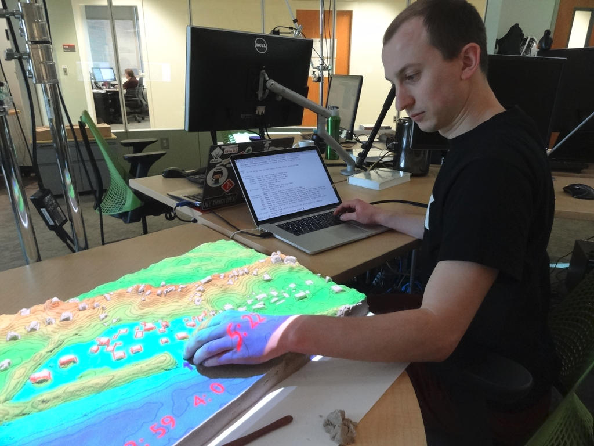
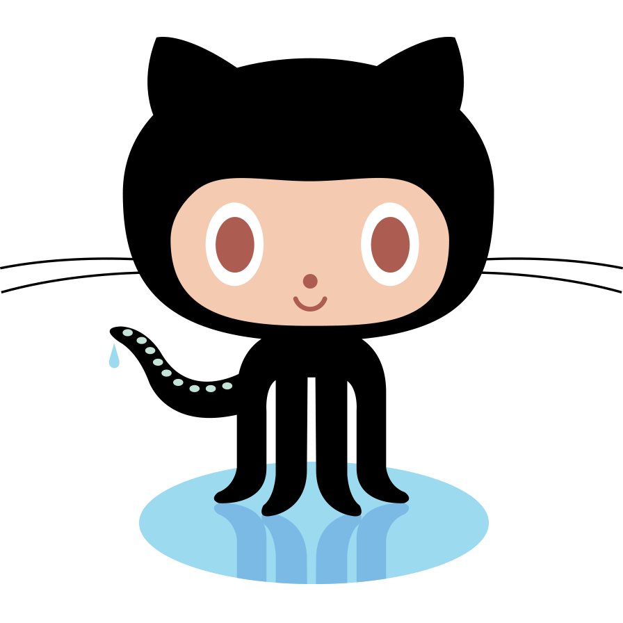

Take-Home Messages from Adding Code Quality Measures to GRASS GIS
NCSU GeoForAll Lab
at the
Center for Geospatial Analytics
North Carolina State University

August 25, 2022
Vaclav (Vashek) Petras
Geospatial Research Software Engineer at North Carolina State University


Community
-
Open community of users and contributors
- Affiliations: industry, academia, government
- Contributions: code, documentation, free support, …
-
Project Steering Committee
- PSC Chair: Verónica Andreo (since February 2021)

Credit goes to the whole community, not just this talk's author.
General Features
- Open-source and directly user-driven development
- Processing tools: 400+ in core, 400+ addons
- Interfaces: graphical, command line, Python, C
- 3rd party interfaces: actinia (REST API), R, QGIS, OGC WPS
- Innovation with Stability & All-in-one Software Suite

GitHub-centered Software Development
- Git
- PRs
- Issues
- GitHub Actions

Improved and Robust Code Quality Checks
- Python code formatted by Black.
- Python code checked against Flake8, some even Pylint.
- Most of warnings in C code removed and now checked.
- Code tested with CodeQL.
by Nicklas Larsson, Vaclav Petras, Anna Petrasova, Carmen Tawalika, ...
Addons Repository
- Community-maintained tools (addons aka extensions, plugins)
- Separate from the main repository, but only one repository
- A repository with the source code, not just a registry
- Best of both worlds:
- Broader community of contributors, including one-time contributors
- Single repository maintained by the core community
Questions?
FUTURES
r.futures - set of tools for urban growth modeling

by NC State Center for Geospatial Analytics
PoPS
r.pops.spread - Pest or Pathogen Spread simulation

by NC State Center for Geospatial Analytics
Resources
- Documentation:
- Tutorials (my three favorites):
-
Books:
- Open Source GIS: A GRASS GIS Approach (the classic)
- Tangible Modeling with Open Source GIS (use-case-based with additional flavors)
- Open Source Approaches to Spatial Data Handling (broader context)
Contribute fixes: github.com/OSGeo/grass
Get support from NC State University: vpetras@ncsu.edu